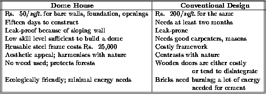

Up: No Title Previous: The Housing Situation
SVT's Housing Programme
In response to the problems posed in Section ,
SVT has designed and built 12 low-cost permanent houses in the nearby
areas, the details of which we describe now.
(1) Construction Details and Costs. The structure is that of
a hemispherical dome, the surface that has a maximum volume for a
given surface area. The structure used by SVT is based on the geodesic
dome developed by Buckminster Fuller, and has been adapted for use in
rural India by Dr. Sastry and Dr. Emilio Faro, a PhD in Mathematics
from the State University of New York at Buffalo, USA. The surface of
the dome is made of small triangles forming pentagonal and hexagonal
shapes. The triangles can be as thin as egg shells, making the
structure light, yet strong; no columns are needed for support,
since the triangles support each other. Little or no foundation
is needed. The current cost of building a 300 sqft. house is
Rs. 15,000. In addition, the whole dome can be assembled in 15 days by
the villagers.
(2) Comparison with existing houses and rectangular designs.
Most villagers live in small huts with mud walls and thatched roofs.
These have the advantages of being cool inside, needing only local
materials and easy training, and of having a low initial setup cost,
of about Rs. 5,000. On the other hand, since the thatch rots in two
years, the total expenditure over 20 years is Rs. 20,000 ---
for a house
which is vulnerable to earthquakes, cyclones, fires, floods and
leakages. In addition, the hygienic conditions are
poor. Further, the house does not constitute a bankable asset for
the family.
In contrast, the dome houses constructed are long-lasting structures which are safe in the face of the above natural calamities at a cost of only Rs. 16,000 each; they are equally comfortable to live in. They do not need special equipment or training, and can be built by the villagers themselves, within two weeks. They thus constitute a bankable asset. In addition, rural families which attain some economic power usually build shaky brick houses, which are a major earthquake hazard as witnessed recently in Maharashtra and Karnataka; the dome house does not face this problem.
The table below summarises the advantages of the dome shape over the conventional rectangular house design.

Finally, SVT is researching into the means for enabling
each house to generate
its own energy, by combining solar thermal collection and
wind energy.
Once this idea is researched and ready, the self-energising
component will become a very valuable add-on to each dome house.
(3) Progress so far and acceptability of the design.
SVT has built 12 dome houses, both at Devipuram and in the village
of Gangavaram.
Apart from the ones at Devipuram, they currently house
the Mahila Mandals started by SVT, in various villages.
The houses at Devipuram serve as guest-houses to visitors.
About 50,000 people from various sections of society
visited these domes during a festival in February 1994, and
commented on the excellent feeling they had being inside them.
This is a very positive indicator of the acceptability of the design.
In fact, two families in Gangavaram village are so pleased
with the design of the dome-house in the village, that they
have started building such a house by themselves.
Further, two dome houses have been built using SVT's
design by a private entrepreneur at Parvatipuram, and were very well
received by the Tribal Development Corporation of the Andhra Pradesh
Government.
SVT is also constructing dome houses for its evening schools in the nearby villages. The Government's NFE programme has agreed to cover 25% of the costs for these schools, 25% of the expenses will be provided by the villagers (in terms of labour and cost), and SVT will cover the remaining 50%. SVT will complete 15 such schools by March 1995, at which point it will begin a socio-economic survey of the acceptability of the structure to the villagers.
Up: No Title Previous: The Housing Situation
Priyadarsan Patra